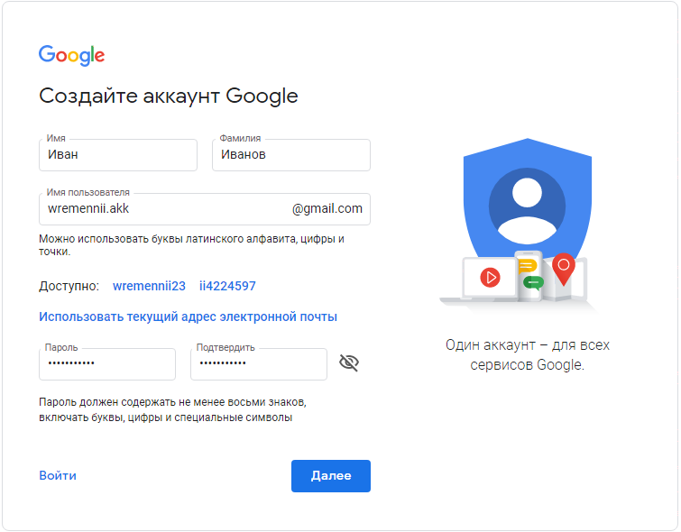
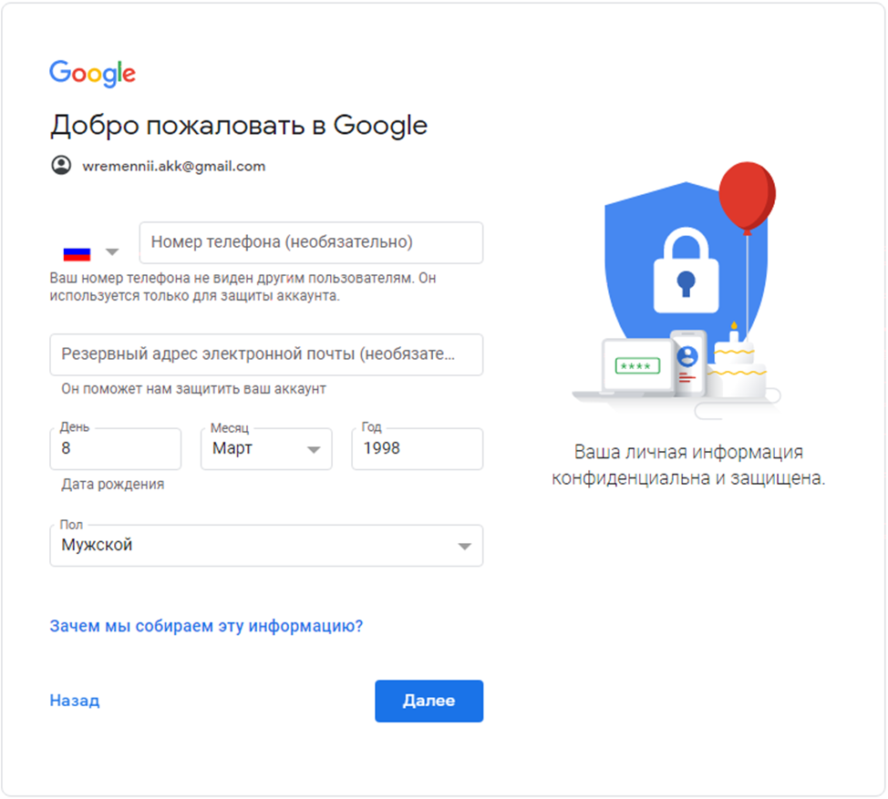

Как играть в игры на BlueStacks
BlueStacks — один из самых популярных Андроид-эмуляторов. Он позволяет устанавливать на ПК приложения и игры, но, для того чтобы скачать их, понадобится зарегистрированный аккаунт Google. Так как компания хранит достаточно много персональной информации о пользователе, задействовать основной аккаунт нежелательно. Поэтому есть смысл перед первым запуском эмулятора зарегистрировать в сервисе новую учетную запись.
| Как качать игры в Bluestacks ↓ | Как запустить игру в Bluestacks ↓ |
| Регистрация аккаунта Google ↓ | Как скачивать игры из Плей маркета ↓ |
Регистрация аккаунта Google
Внимание!! Регистрация аккаунта нужна при первом доступе к плей маркету, по тому как есть проблемы с регистрацией аккаунта через сам эмулятор, система безопасности гугл будет запрашивать номер телефона или другие данные, если вы введете свой номер то предыдущий аккаунт ваш личный к которому привязан номер станет недоступным либо его нужно будет восстановить и тд. (в общем гемора потом будет много).
Создавать аккаунт нужно через ваш браузер которым вы пользуетесь, чтобы не пришлось писать номер телефона, как в том случае, если бы регистрация проходила напрямую через эмулятор. Чтобы начать регистрацию, надо пройти по этой ссылке — https://accounts.google.com/signup/v2/webcreateaccount
Заполненное окно регистрации выглядит так, как на картинке ниже.

{kind=link}
Здесь необходимо указать адрес электронной почты, имя и фамилию, дать аккаунту пароль. Он должен быть надежным, рекомендуется использовать генераторы паролей, либо придумать его самостоятельно. Желательно вводить буквы с разным регистром, а для лучшего запоминания подобрать небольшие слова, из которых легко составить предложение. Чтобы еще больше облегчить себе задачу, пользователи применяют специальные утилиты, вроде KeePass, которые сохраняют пароли.
Второе окно регистрации выглядит так.

{kind=link}
Номер телефона нужен для настройки двухфакторной авторизации, которая повышает безопасность аккаунта. Однако это требование необязательное и не пригодится для альтернативного аккаунта, который не будет содержать важной информации.
А вот резервную почту указать стоит — с ее помощью всегда можно будет восстановить почтовый ящик аккаунта, если его взломают или пароль потеряется.
После нажатия на кнопку «Далее» произойдет регистрация аккаунта и он станет доступным для логина во всех сервисах компании. Теперь остается приступить к авторизации в Блюстакс.
Вход в Play Market
При первом входе, эмулятор автоматически предложит авторизацию аккаунта. Остается только согласиться, для тех, кто отказался и решил создать альтернативный, после запуска системы нужно обратить внимание на поле «Рекомендации для вас», где будет приложение Google Play Store. На него и нужно кликнуть.
{kind=link}
Откроется вторая вкладка, при клике на кнопку «Войти» откроется стандартное меню авторизации понадобится:
1. Вписать адрес недавно созданной почты.
2. Ввести пароль.
3. Принять условия использования.
При появлении предложения о привязке номера телефона к аккаунту, его можно отклонить, нажав на соответствующую кнопку в нижней части экрана. Также, если опция совсем не нужна, ее можно и отключить. После завершения всех проверок, откроется вкладка Google Play, откуда скачиваются все версии приложений и игр.
Как скачать игры из Плей маркета
Чтобы скачать игру через Play Market, на главном экране нужно нажать на «Поиск игр и приложений».
{kind=link}
Пусть в качестве примера будет установлена игра Soul Kinght. Ее и нужно ввести в строку. По мере ввода будут выскакивать результаты поиска. Первый — тот, что нужен.
{kind=link}
Клик на первую строчку приведет к переходу на страницу игры. Чтобы начать загрузку, понадобится нажать зеленую кнопку «Установить» и подождать завершения процесса. После этого на рабочем столе появится ярлык, через который игра запускается.
Как запустить игру
Для запуска приложения надо войти во вкладку «Главная», а там выбрать раздел «Мои игры», чтобы открыть главный экран.
{kind=link}
Для запуска игры достаточно кликнуть на значок установленного приложения. Иконка контроллера обозначает поддержку геймпада. Эмулятор автоматически подберет удобный пресет управления, поэтому игровой процесс не будет отличаться от геймплея обычных игр.
В BlueStacks реализована возможность получения root-прав при помощи сторонних утилит, вроде BSTweaker. Чтобы взламывать игры, потребуется установить другую утилиту. Один из самых популярных вариантов — Game Guardian. Но она требует наличия рут-прав для запуска.
Предварительные настройки
Прежде чем начинать запуск приложения, желательно произвести начальные настройки. Это позволит выудить больше производительности и повысить качество картинки. Переход в меню настроек осуществляется так, как на картинке ниже.
{kind=link}
Попав в это меню, следует сразу перейти в раздел «Движок» и промотать в самый низ. Там есть ползунок, определяющий количество оперативной памяти, которую сможет использовать эмулятор. Имеется возможно выставить готовые настройки.
{kind=link}
Количество CPU зависит от используемого процесса. Чем их больше, тем лучше, иначе игры могут страдать от недостатка производительности в случае со слабыми процессорами. Остальные параметры можно оставить по умолчанию. Переставлять их следует только при возникновении лагов или проблем с запуском приложений.
В разделе «Экран» нужно подобрать для него правильное разрешение. Некоторые приложения привередливо относятся к этому параметру. Можно довериться программе или самостоятельно указать нужные значения. Затем понадобится выбрать горизонтальную (эмуляция планшета) или вертикальную (эмуляция телефона) ориентацию.
{kind=link}
Параметр DPI отвечает за число пикселей на дюйм изображения. Это общее качество графики для любого приложения. Высокие значения параметра могут привести к проблемам с производительностью.
Заключение
Теперь Блюстакс готов к запуску игр и приложений. У каждого приложения имеется собственный пресет управления, который можно изменить при нажатии на кнопку «Управление в игре» на боковой панели, после чего выбрать «Редактор управления». Представленные инструменты позволяют настроить как эмуляцию тапов по экрану, так и назначить определенные действия на горячие клавиши.
Благодарю за помощь и информацию!
Лучший эмулятор для андройд игр и прочих приложений
BlueStacks — один из лучших эмуляторов Android….
Скачал недавно на ПК. Нравится
Сначала не понял как запустить игру, но быстро разобрался. Очень удобно играть.
спасибо за совет зарегистрировать новую учетную запись)
Отличная платформа. Очень понравилась.
Теперь играю мобильную версию world if tanks на компе)
Good